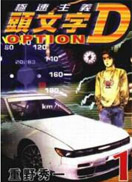

- 棒球英豪《棒球英豪》它是一个与以往的棒球漫画完全不同感觉的作品，主人公奋斗的动力并非对棒球的狂热而是为了喜欢的女孩子。作者用纤细的笔触刻画出了青春期少男少女的微妙心理。和也去世后达也与小南的反应，以及达也向小南表白的一段都是漫画史上的经典场面。故事从3个青梅竹马双胞胎兄弟上杉达也，上杉和也与邻家女孩浅仓南开始了剧情的发展，取得了不一般的轰动效果，也使得这部漫画成为作者安达充的代表作之一。
- 灌篮高手樱木花道，湘北高校一年级生。在初中有被50个女生连续抛弃的历史。因第50个女生的一句“我喜欢的是篮球队的小田同学。”而对篮球深恶痛绝。上高中不经意被美少女赤木晴子的一句：“你喜欢篮球吗？”又燃起希望。为得到晴子的芳心，花道不顾一切的加入篮球队，并以惊人的速度进步。
- 棋魂-TV进藤光是一个小学6年级学生。有一天，小光跑到爷爷家里寻宝，想赚些零用钱，没想到偶然翻出了一个旧棋盘。就在他接触棋盘的一瞬间，附身于棋盘中的平安时代天才棋士——藤原佐为的灵魂进入了小光的体内。佐为将围棋视为生命，在他的熏陶下，小光也逐渐对围棋产生了兴趣。
-  头文字D-第1部有一辆自己的车子，在高速公路上飞驰是每一个男孩子的梦想。而公路最速传说，这是不能明言，但确实存在的事。在无垠的夜幕中，追求速度，伴随着死的刺激，寻找自身的极限。
- 网球王子 根据许斐刚原作人气漫画的制作的动画版网球王子（也称“TV版网球王子”），共178集。画面精良，人设依旧为漫画的人物，人物设定很可爱。情节方面也一向都是体育类的专长，既有扣人心弦的比赛，也有青春校园式的搞笑。虽然免不了体育类夸张的成分和一些谬误，但作为一般人看看的片子还是有点普及网球知识、增加兴趣的好处。
- 游戏王 《游戏王》动画版，首先于1998年4月4日在日本的朝日电视台播放，共有27集。于1998年10月10日完播，是真正意义上的第一部游戏王动画。主要讲述漫画前期的黑暗游戏（闇のゲーム)，直到第一次打败闇貘良为止，声优阵容超强。
-
热门关键词：热血 机战 恐怖 搞笑 神魔 经济 推理 浪漫